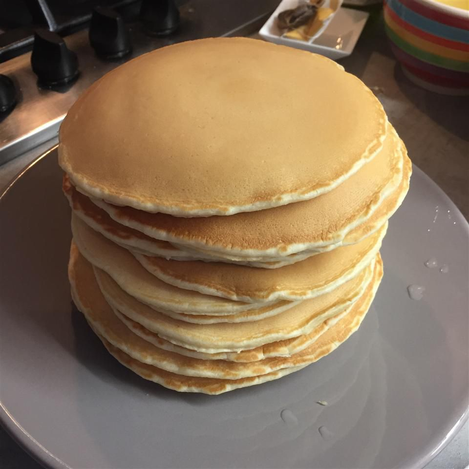

PANCAKE

description
Mix flour, sugar, baking powder, and salt. Whisk milk, egg, and butter, then combine with dry ingredients. Pour batter onto a heated, greased skillet. Cook until bubbles form, flip, and cook until golden. Serve with syrup.
ingredients
- 1 cup all-purpose flour
- 2 tablespoons sugar
- 1 tablespoon baking powder
- 1/2 teaspoon salt
- 1 cup milk
- 1 large egg
- 2 tablespoons melted butter or oil
- 1 teaspoon vanilla extract
steps
- In a large bowl, whisk together the flour, sugar, baking powder, and salt.
- Mix wet ingredients: In a separate bowl, whisk the milk, egg, melted butter (or oil), and vanilla extract until well combined.
- Pour the wet ingredients into the dry ingredients and stir just until combined. The batter may have a few lumps, which is fine.
- Heat a non-stick skillet or griddle over medium heat. Lightly grease with butter or oil. Pour about 1/4 cup of batter for each pancake onto the skillet.
- Cook until bubbles form on the surface, then flip and cook until golden brown, about 1-2 minutes per side.
- Serve warm with syrup, butter, or your favorite toppings.